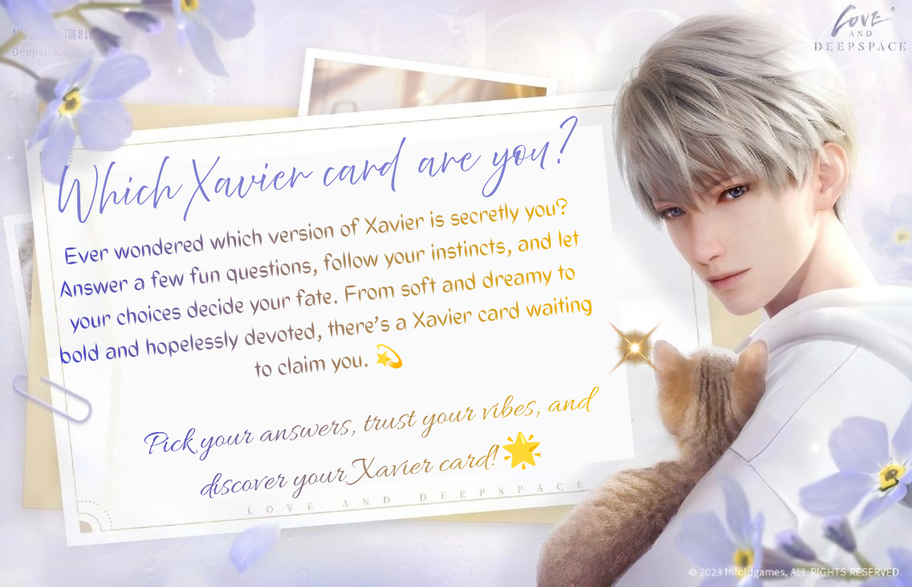

a not-so-scientific pull
Which Xavier are you?


[The quiz contains a pool of all 5-star cards of Xavier. This is an unofficial fan content made to celebrate Xavier's Birthday.The personality quiz is made simply for fun - kindly do not take it seriously.]